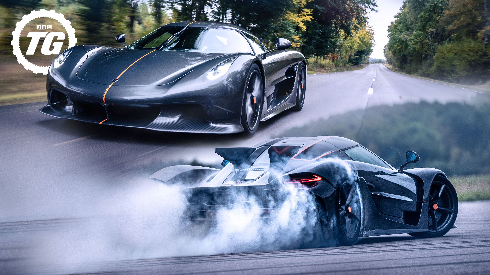
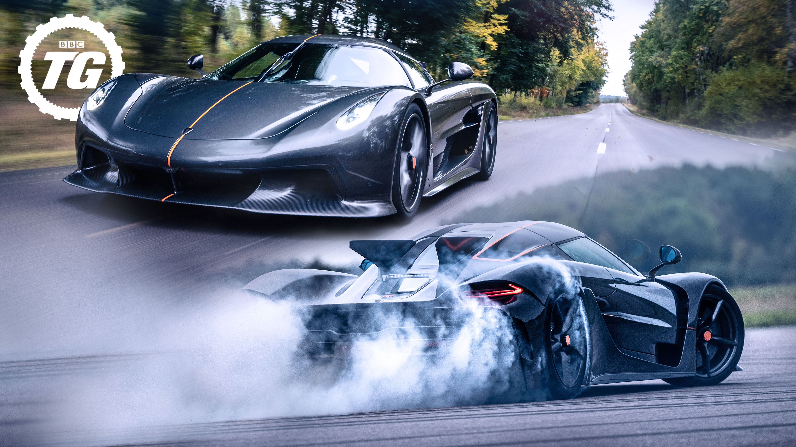

O Koenigsegg Jesko com suas duas versões Attack e Absolut é a personificação do ápice da engenharia automotiva, uma máquina que ultrapassa os limites do que se era considerado impossível, desafiando as leis da física, com a precisão absurda e sua maestria absoluta em aerodinâmica. Criado para dominar as estradas e as pistas conhecidas como as mais exigentes, o Jesko não é apenas um carro é uma fusão de arte e ciência, um monstro de desempenho, a definição de beleza e inovação.
 

O Koenigsegg Jesko é alimentado por um motor
V8 biturbo de 5.0 litros.
Com diversas tecnologias avançadas
para maximizar o seu desempenho e sua eficiência.
O motor é capaz de gerar até 1.600 cavalos de potência quando alimentado com
combustível E85 (uma mistura de etanol e gasolina).
A produção de torque chega a 1.500 Nm a 2.600 rpm, o que permite uma aceleração brutal e
uma velocidade máxima impressionante.
O sistema de turbocompressor foi desenvolvido internamente pela Koenigsegg e usa turbinas de titânio
para reduzir o peso
e melhorar a eficiência. O sistema de "flat-plane crank" (came plano)
contribui para uma entrega de potência mais linear e de alta rotação.
O Koenigsegg Jesko tem duas versões distintas: o Jesko Absolut e o Jesko Attack.
Ambos são modelos
de supercarros de alto desempenho, mas com foco em características diferentes.
O Attack foi feito para máximo desempenho em circuito. Ele é mais focado em agilidade,
aceleração e maneabilidade.
Isso implica em um ajuste mais agressivo de aerodinâmica e suspensão,
garantindo melhor tração e controle em curvas e em
condições de pista fechada.
Conta com uma aerodinâmica mais agressiva, incluindo uma asa traseira ajustável e outras
características que
aumentam o downforce, melhorando a aderência e estabilidade nas pistas.
Ele tem uma configuração de aerofólio
que gera mais pressão negativa para proporcionar maior
aderência em curvas de alta velocidade.
Ambas as versões compartilham o mesmo motor, o V8 de 5,0 litros biturbo, mas o motor do Jesko Attack tem o foco
na utilização dessa potência em um ambiente de pista. Isso pode significar um ajuste diferente de mapeamento do
motor
para uma resposta mais precisa e eficiente em aceleração rápida e frenagem em circuitos.
Focado na velocidade máxima, possui um design mais aerodinâmico, com menor arrasto. Para isso, elimina a grande asa traseira e usa estabilizadores duplos menores. Projetado para ultrapassar 500 km/h (teoricamente, pode ser o carro de produção mais rápido do mundo)
O Jesko Absolut com sua tecnologia aerodinâmica prioriza um fluxo de ar limpo, com o mínimo de
resistência possível.
Para atingir velocidades extremas, possui diversas modificações em comparação ao Attack,
como os dois pequenos estabilizadores verticais na traseira, para reduzir o arrasto e manter
a estabilidade em altas velocidades.
Já em relação ao seu motor, o Absolut compartilha do mesmo motor com o Attack, contudo contém modificações que sejam favoráveis para o seu objetivo de alcançar os 500km/h, com sua potência de até 1600cv.
Voltar